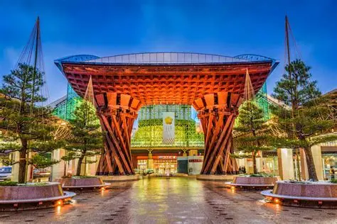

Conheça a página
Prepare-se para conhecer alguns dos destinos mais interessantes do Japão. De cidades modernas a locais históricos, este site reúne informações essenciais para quem deseja explorar e se inspirar em novas experiências.

Tokyo
Tóquio é a capital do Japão e uma das maiores metrópoles do mundo. Mistura tecnologia moderna com tradições antigas e oferece uma vida urbana intensa.

Kyoto
Kyoto preserva a tradição japonesa com templos antigos, jardins zen e casas típicas. Foi a antiga capital do Japão e é rica em cultura.

Osaka
Osaka é famosa por sua culinária e vida noturna. Conhecida como a cozinha do Japão, tem pratos como takoyaki e okonomiyaki.

Kanazawa
Kanazawa é famosa pelo distrito dos samurais e sua arquitetura histórica. Um ótimo lugar para conhecer o Japão feudal.

Hiroshima
Hiroshima é símbolo de paz e superação. Possui o Parque Memorial da Paz e uma história marcante.

Kamakura
Kamakura é uma cidade costeira com praias e templos históricos. Destaque para o famoso Grande Buda.
Sobre o Japão
O Japão é um país localizado no leste da Ásia, conhecido por sua rica cultura, tecnologia avançada e paisagens naturais impressionantes. O país combina tradição e modernidade de forma única, com templos históricos coexistindo com cidades altamente desenvolvidas. Além disso, o Japão é famoso por sua gastronomia, hospitalidade e respeito às tradições, atraindo milhões de turistas todos os anos.